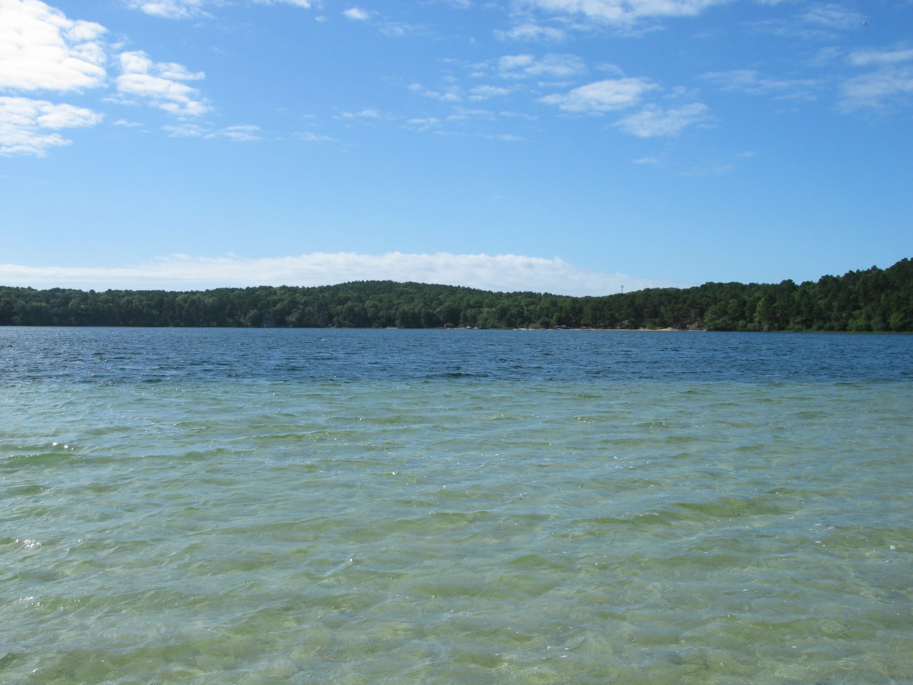

Two Wellfleet Ponds: A Comparison
Gull Pond

- Gull has a large dock that's great for children.
- Because of all the families, this pond is often crowded. There are few places to sit, especially in large groups.
- This pond has a large parking lot but a beach sticker is required for entry.
- Kayaks and sailboats are available for rental.
- There is a public bathroom located towards the bottom of the parking lot.
- For those adventurous swimmers, one can swim from Gull to the Sluice, a quiet channel located near a wooded trail.
Duck Pond

- Duck has no dock, it's less of an attraction for young families.
- This pond is lesser known and therefore much less crowded. The beach is fenced off, leaving little space to leave your chairs.
- Duck is located in the woods, so there are only a few parking spots. No beach sticker is required.
- Because it's located in the woods, this pond is much shadier. The air and water temperature feels colder than Gull.
- This pond is much smaller. It's much more manageable to swim from one side to another.
- Duck has no public bathroom.

Bays